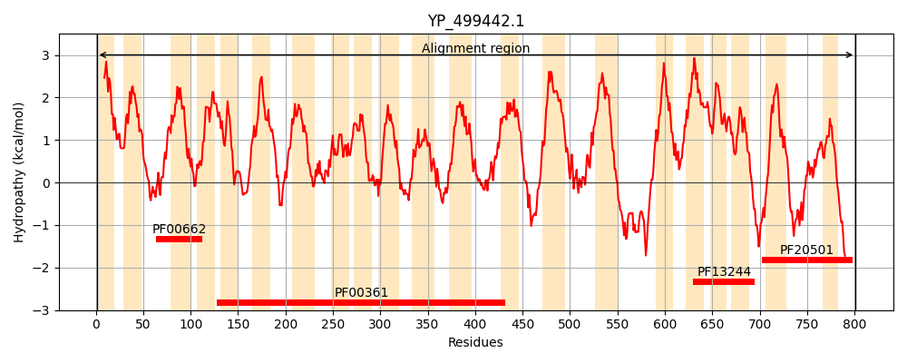

Hit Accession: Q9ZNG6
Hit TCID: 2.A.63.1.3
Hit Description: gnl|BL_ORD_ID|19622 gnl|TC-DB|Q9ZNG6|2.A.63.1.3 MnhA - Staphylococcus aureus.
Mach Len: 801
e:0.000000
Query TMS Count : 21
Hit TMS Count: 21
TMS-Overlap Score: 22.350000
Predicted Substrates:CHEBI:9175;sodium(1+), CHEBI:5584;hydron
BLAST Alignment:
Score: 4046 , Bit scores: 1563 bits, E-value: 0.0e+00, Alignment length: 801, Percentage identity: 100
Query: 1 MSLLHIAVILPLIFALIIPILYRFFKRIHLGWFVLPVPIVIFIYMLTLIKTTMSGNTVMKTLNWMPHFGMNFDLYLDGLGLLFSLLISGIGSLVVLYSIGYLSKSEQLGNFYCYLLLFMGAMLGVVLSDNVIILYLFWELTSFSSFLLISFWRERQASIYGAQKSLIITVFGGLSLLGGIILLAIPTQSFSIQYMIQHASEIQNSPFFIFAMILIMIGAFTKSAQFPFYIWLPDAMEAPTPVSAYLHSATMVKAGLYLIARMTPIFAASQGWVWTVTLVGLITLFWASLNATKQQDLKGILAFSTVSQLGMIMAMLGIGAISYHYQGDDSKIYAAAFTAAIFHLINHATFKGALFMITGAVDHSTGTRDVKKLGGLLTIMPISFTITVITALSMAGVPPFNGFLSKESFLETTFTASQANLFSVDTLGYLFPIIGIVGSVFTFVYSIKFIMHIFFGQYKPEQLPKKAHEVSILMLLSPAILATLVIVFGLFPGILTNSIIEPATSSINHTVIDDVEFHMFHGLTPAFLSTLVIYILGILLIVTFSYWVKLLQRQPGKLTFNYWYNRSANVIPNYSEKMTNSYVTDYSRNNLVIIFGALILLTFVTIFSVPFNINFKDVSPIRIFEVCIVILLLSAAFLILFAKSRLFSIIMLSAVGYAVSVLFIFFKAPDLALTQFVVESISTALFLLCFYHLPNLNRYNEKRSFQLTNALIAGGVGLSVIIIGLIAYGNRHFESISKFYQEHVYDLAHGKNMVNVILVDFRGMDTLFESSVLGIAGLAVYTMIKLRKKRQTQGNEVKNHE 801
MSLLHIAVILPLIFALIIPILYRFFKRIHLGWFVL VPIVIFIYMLTLIKTTMSGNTVMKTLNWMPHFGMNFDLYLDGLGLLFSLLISGIGSLVVLYSIGYLSKSEQLGNFYCYLLLFMGAMLGVVLSDNVIILYLFWELTSFSSFLLISFWRERQASIYGAQKSLIITVFGGLSLLGGIILLAIPTQSFSIQYMIQHASEIQNSPFFIFAMILIMIGAFTKSAQFPFYIWLPDAMEAPTPVSAYLHSATMVKAGLYLIARMTPIFAASQGWVWTVTLVGLITLFWASLNATKQQDLKGILAFSTVSQLGMIMAMLGIGAISYHYQGDDSKIYAAAFTAAIFHLINHATFKGALFMITGAVDHSTGTRDVKKLGGLLTIMPISFTITVITALSMAGVPPFNGFLSKESFLETTFTASQANLFSVDTLGYLFPIIGIVGSVFTFVYSIKFIMHIFFGQYKPEQLPKKAHEVSILMLLSPAILATLVIVFGLFPGILTNSIIEPATSSINHTVIDDVEFHMFHGLTPAFLSTLVIYILGILLIVTFSYWVKLLQRQPGKLTFNYWYNRSANVIPNYSEKMTNSYVTDYSRNNLVIIFGALILLTFVTIFSVPFNINFKDVSPIRIFEVCIVILLLSAAFLILFAKSRLFSIIMLSAVGYAVSVLFIFFKAPDLALTQFVVESISTALFLLCFYHLPNLNRYNEKRSFQLTNALIAGGVGLSVIIIGLIAYGNRHFESISKFYQEHVYDLAHGKNMVNVILVDFRGMDTLFESSVLGIAGLAVYTMIKLRKKRQTQGNEVKNHE
Sbjct: 1 MSLLHIAVILPLIFALIIPILYRFFKRIHLGWFVLSVPIVIFIYMLTLIKTTMSGNTVMKTLNWMPHFGMNFDLYLDGLGLLFSLLISGIGSLVVLYSIGYLSKSEQLGNFYCYLLLFMGAMLGVVLSDNVIILYLFWELTSFSSFLLISFWRERQASIYGAQKSLIITVFGGLSLLGGIILLAIPTQSFSIQYMIQHASEIQNSPFFIFAMILIMIGAFTKSAQFPFYIWLPDAMEAPTPVSAYLHSATMVKAGLYLIARMTPIFAASQGWVWTVTLVGLITLFWASLNATKQQDLKGILAFSTVSQLGMIMAMLGIGAISYHYQGDDSKIYAAAFTAAIFHLINHATFKGALFMITGAVDHSTGTRDVKKLGGLLTIMPISFTITVITALSMAGVPPFNGFLSKESFLETTFTASQANLFSVDTLGYLFPIIGIVGSVFTFVYSIKFIMHIFFGQYKPEQLPKKAHEVSILMLLSPAILATLVIVFGLFPGILTNSIIEPATSSINHTVIDDVEFHMFHGLTPAFLSTLVIYILGILLIVTFSYWVKLLQRQPGKLTFNYWYNRSANVIPNYSEKMTNSYVTDYSRNNLVIIFGALILLTFVTIFSVPFNINFKDVSPIRIFEVCIVILLLSAAFLILFAKSRLFSIIMLSAVGYAVSVLFIFFKAPDLALTQFVVESISTALFLLCFYHLPNLNRYNEKRSFQLTNALIAGGVGLSVIIIGLIAYGNRHFESISKFYQEHVYDLAHGKNMVNVILVDFRGMDTLFESSVLGIAGLAVYTMIKLRKKRQTQGNEVKNHE 801 | Protein Hydropathy Plots: |
|---|
|  | |
Pairwise Alignment-Hydropathy Plot:
|
|---|
|